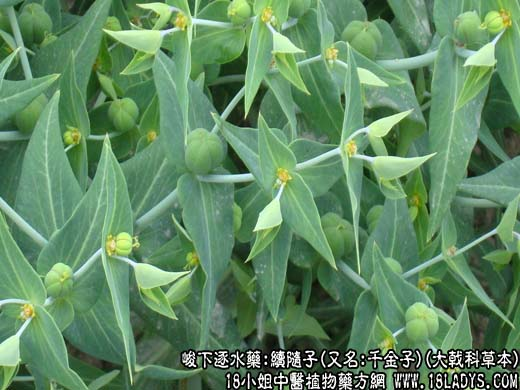

【中药概述】续随子(又名:千金子)为大戟科草本植物续随子的成熟种子。辛、温；有毒。归肝、肾、大肠经。 1．泻水消肿：用于水肿腹水，二便不通之水肿实症，可单味使用，或与大黄等同用。如（证治准绳<续随子丸>续随子，人参，木香，防己，茯苓，槟榔，葶苈子，海金沙，桑白皮）。 2．破血消症：用于月经闭止，症瘕积聚等症。可与其他活血调经药同用。 【化学成分】含黄酮甙、大戟双香豆素、白瑞香素、脂肪油及大戟醇、大戟甲烯醇等。 【用量用法】1.5——5g，打碎入煎剂，或入丸、散剂。
本文解释权归中药大全，本文地址：https://www.daquan.com/post/1916.html